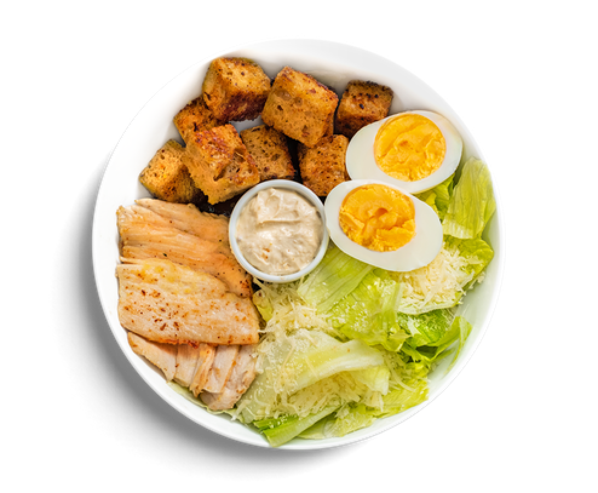

Roman Caesar with chicken breast
Traditional Caesar salad is characterized by that tangy, so-good-that-it's-addictive dressing made by combining egg, Worcestershire sauce, lemon, garlic, pepper, mustard, and anchovies— but that's not the only way to do it.
Contents
Total Weight 300g
Potatoes
Tomatoes
Salt
Sugar